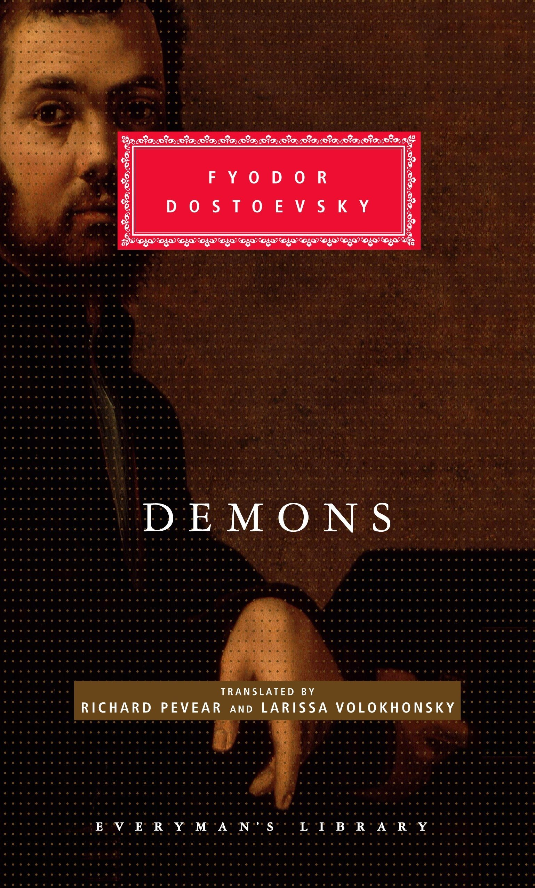

|  | 1872 Demonii Acest roman i-a câștigat ura permanentă a radicalilor. Adesea considerat cel mai strălucit roman politic scris vreodată, el împletește două intrigi. Unul îl privește pe Nikolay Stavrogin, un bărbat cu un vid în centrul ființei sale. În anii săi mai tineri, Stavrogin, într-o căutare zadarnică a sensului, îmbrățișase și renunțase la un șir de ideologii, fiecare dintre acestea fiind adoptate de diferiți intelectuali hipnotizați de personalitatea lui Stavrogin. Șatov a devenit un slavofil care, la fel ca însuși Dostoievski, crede în poporul rus „purtător de Dumnezeu”. Criticii existențialiști (în special Albert Camus) au devenit fascinați de Kirillov, care adoptă o serie de justificări filozofice contradictorii pentru sinucidere. Cel mai faimos, Kirillov susține că doar un act complet gratuit de autodistrugere poate dovedi că o persoană este liberă, deoarece un astfel de act nu poate fi explicat prin niciun fel de interes propriu și, prin urmare, încalcă toate legile psihologice. Kirillov speră să devină „om-zeul” și să ofere astfel un exemplu pentru libertatea omului într-o lume care L-a negat pe Hristos. |
FILM